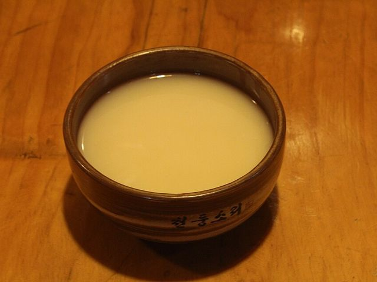
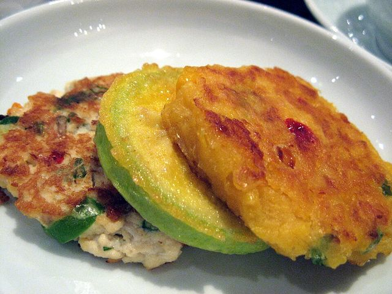

취향을 알려주세요 🍻
좋으면 오른쪽, 아니면 왼쪽으로 밀어요
오늘의 페어링
노성민님의 취향 분석 결과


느린마을 막걸리모둠전
달큰하고 부드러운 막걸리엔 기름진 전이 진리예요. 빗소리 들리는 날 혼술로 딱.
근처에서 바로 사기 · 미추홀구
CU 인하대정문점
막걸리 3종 · 도보 2분
이마트24 용현점
전통주 코너 · 도보 4분
전통주점 ‘율’
현장 시음 가능 · 도보 6분
오늘의 발견 🔍
숨어있던 소규모 양조장·전통주
사진 출처 및 안내
이 페이지는 프로토타입 데모입니다. 제품명·매장·거리·궁합 수치는 화면 예시이며 실제 데이터가 아닙니다. 사진은 위키미디어 공용(Wikimedia Commons)의 자유 이용 이미지를 잘라 쓴 것으로, 특정 제품의 실제 사진이 아닙니다.